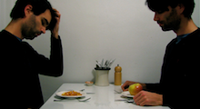
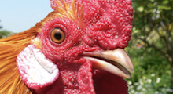

(Re)Thinking Food

Jennifer Murtoff: Urban Chicken Consultant
Ever wonder how one sets up their own backyard chicken coop? Jennifer Murtoff has all the answers.
Growing Up
How do you farm in a concrete jungle? Stack plants vertically without soil.
Searching For
An Oasis
The Southside of Chicago has become a 'food desert,' an environment where mainstream grocers are distant and unhealthy food is essentially unavoidable.
Cooking Local
Take a bike ride to Green Grocer, a one stop shop for locally sourced meat, produce and beverages. Owner Cassie Green gives the scoop on local food and beverage as she builds locally sourced meals for a meat lover and a vegetarian on a budget.
Small Gardens for Small Spaces
With the locavore movement hitting Chicago, many people want to grow their own vegetables but don't know how or what to do in the winter months. A window farm is an easy way to grow your own produce in a small space and keep them healthy in the year round.
Food for Thought
What are you consuming? An audio exploration of what food means to us, and how we decide what to eat.
Exploring Sustainable Food in Chicago
know
Sustainable Food Facts

the real cost of cheap food
How much does that breast actually cost?
- 
food for thought
What we talk about when we talk about food.

selling "local"
Is the future of local food more mainstream choices or more consumer confusion?
feed: tracing our food sources
discover where the food commonly found on your table comes from and how it gets there. An interactive data visualization.
grow
Growing Your Own in the City

growing up
vertical farming in chicago.

Small Gardens for Small Spaces
sourcing and building a window farm in Chicago
- 
Jennifer Murtoff: Urban Chicken Consultant
Chickens in the City?
go
Chicago's Locavore Hotspots
chicago's local and sustainable resources
Maps for the eco and health conscious locavore.

searching for an oasis
Gaylon Alcaraz is determined to make a positive impact for her child starting at her kitchen table.

cooking local
Local food and drinks are just a bike ride away.